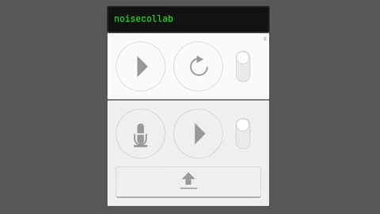
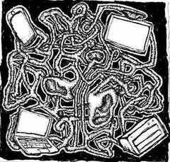

Harshroom
Harshroom was a prototype to visualize the concept of having a labyrith of rooms containing spatialized audio streams. I used THREE.js for the 3D part and React for the UI. Although the core idea was to not have a visual aspect, it served as a way to communicate and imagine what it could be.
Build notes
- It will only build using Node 12.
- Rollup for the build tool, which I believe was the preferred alternative to Grunt.
- It appears I hand-inserted a live-reload script tag for development.
- Three.js for the 3D rendering. I didn't really understand how to make a visuanl mesh and floor mesh for this, so I used ThreeBSP, which iirc resulted in fairly bad performance.
- React 15 for the minimal UI stuff, definitely overkill.
- Scss for building styles, which required a binary in order to compile.
- I was mimicing the code style of Three.js, so lot's of white space.
- My notes say that I was planning to expand this to include many rooms with stairs and hallways to join them. I eventually started to explore this separately when learning building game engines and levels.
- This project was where I first learned about virtually spatialized audio.

Noisecollab
Noisecollab was a little experiment attempting to explore the "collaborative audio" part of the concept. The idea was that participants would record a second of audio, which would then upload to the server. The audio snippet would be inserted into a 10 second audio loop. The updated loop will then prompt all participants to reload their loop, and subsequently all future requests would pull the newest loop.
Build notes
- I was now using Gulp, it seems in addition to Rollup.
- It was primarily built around SoX, "the Swiss Army knife of sound processing utilities".
- I had written out a system design document to help guide my implementation.
- It appears I had tried a very simple (aka naive) approach to ensuring the integrity of the data. But I end up not using it any way, nor adding any login system.
- I needed to implement a way to ensure audio seamlessness by splitting recordings over the beginning and end of the loop.
- I used a request to random.org to get random values instead of generating them on the server.
- I was making notes to myself in the code as I was thinking through problems, such as handling asynchronous data.

noisecollab-video
Warning: noise!
Drawcollab
With Drawcollab, I shifted gears back to graphics and tried building a collaborative drawing experiment. It was mostly to learn Go for server-side code, Redis to manage data, and C++ for OpenGL-based rendering.
Build notes
- This was one of my first WebSockets projects.
- I was pretty new to memory management, so the program would often crash.
- The choices I made regarding the languages was mostly about performance. I was getting tired of the limitations of the browser and node.js and wanted to see how different the experience would be using Go, C++, WebSockets, and Redis.
- I recall really enjoying using Go. C++ on the otherhand was still beyond my ability at the time, I struggled with debugging and code structure.
- I also recall having my mind blown by how fast it worked and how easily it handled all the participants using it.
- One participant figured out how to abuse the API and very quickly filled the entire collaborative canvas. It was entertaining to watch as the room saw everything we did evaporate under a single color - I wish I had recorded it! It helped me grasp how easy and quickly it can be for people that want to "break" a thing, as soon as there's even a slight incentive to do so.
- For reference, the exploit was just the lack of throttling. The message system took every request. It also made me realise there was a memory bug somewhere, I think in the C++ code, because at some point while handling the updates the program crashed.
- One participant figured out how to abuse the API and very quickly filled the entire collaborative canvas. It was entertaining to watch as the room saw everything we did evaporate under a single color - I wish I had recorded it! It helped me grasp how easy and quickly it can be for people that want to "break" a thing, as soon as there's even a slight incentive to do so.
- I was again making design notes and figuring out how to expand the project.
Raspberry Pi and Icecast
Towards the end of 2019, I began to focus back towards audio and the realisation of the original vision. It started with learning about synthesizers, both physical and virtual, and building a self-hosted personal radio stream from my library. I had visited Geoff Stern Art Space and was exposed to the idea of using multi-channel audio for sound art. The synthesis was to imagine taking a collection of many streaming URLs, and feeding each one into a speaker. The speakers would immerse the participant in sound and they could move through the soundscape via streams moving into and throughout the channels.
I think this would work by using a cheap SBC like a Raspberry Pi Zero and connecting it to only one or two channels, and coordinating every SBC used through a local network. This project stalled because of the complexity of trying to use a single machine, as well as handling both input and output, and the requirement of so much hardware and technical setup. I abandoned this approach for something easier for participants to access and use.
Build notes
- Attempted use of python and pyo to handle audio.
- I was actively calculating prices to set up the system.
- I recall encountering limits with doing concurrency / async code in Python in a way that I was familiar with in JavaScript.
- Built many install / setup scripts with rudimentary exception handling.
- Encountered xrun issues due to buffer size, I think that was new to me.
- Iterations of development were split across completely new "versions" of the system. Usually appropriating chunks from the prior version, splitting stuff up, and throwing parts away that didn't work the way I'd hoped.


_noisecrypt
After I realised Raspberry Pi + multiple audio interfaces + Icecast + Python + bash wasn't going to work as a teachable system, I moved on to trying to build this as a web app. The experience with that other system was informative and provided me with a reference, but in comparison it felt much harder to achieve the design I had converged on.
At this stage I had departed entirely from the "surrounded by speakers on streaming audio" model and was building a glitchy performance tool. In retrospect, I think I should've spent more time trying to really figure out the validity of the design as something other people would enjoy using. However, I was invited to present my project at workshops and get grants, so it resonated with other people to that extent. However, it was difficult to articulate the coherency between the original concept and what I was now building.
Working in the browser and centralizing the streams came with its own complexity. What my code examples here don't reveal was how hard it was to figure out how to get audio to segment then seamlessly join. Decompressed audio doesn't look like a perfect representation of a pre-compressed chunk of audio. Each type of compression results in a different looking artefact as well. The wave is shaped different, if you treat each segment as an isolated unit you will have compression artifacts, there might be padding, and all of it has to be blended in with the rest of the audio to make it not pop. Beyond the audio you have to handle the load on the server, storage, browser API support, and performance.
Build notes
- Unique naming approach for the different component projects.
- The use of running everything with it's own mini web app.
- Use of Typescript for FE and BE (Deno).
- Using a tool to help with testing recording audio input.
- Makefiles to help manage build, run, and test scripts.
- nginx and JS config templating.
- sqlite / relational data to store stream and segment data.
- Material UI and UI helpers for using the system.
- Intended to be public - setup notes included.
- Used for presenting at workshops.
- Hash IDs for content addressing.
- systemd service units for automating start up.
- The use of a service to provide random selection to audio stream selection.
- WASM for the encoding of audio segments, mostly opus-stream-decoder.
This is meant to be an image of a desktop computer, a laptop, a phone, a server, and human ears, all tangled together through a spaghetti-like network.

noisecrypt-video
Rivalium
After the first couple of workshops I ran with _noisecrypt, I wanted to make some improvements of the system. The UI wasn't quite where I wanted it to be in terms of how usable it was, there was a lot of copy and paste, separate web apps for each part, and it wasn't clear how to use it altogether. I wanted to be able to improve some of the client-side parts separately to the web app, so I moved them into separate modules. I changed the same to try to indicate the type of system it had become as "noisecrypt" I felt was invoking a different mental image of the system to what it was.
One experiment that I couldn't get working was the use of Audioworklets. They were fairly new to browsers (added April 2021), and they were meant to replace the deprecated ScriptProcessorNode. I was new to how to optimize for them, so I couldn't figure out how to manage the very small buffer they handled. I was doing too much work in them, which would cause overruns, and therefore pops in the audio stream. I eventually abandoned them and returned to the deprecated API.
I also spent a lot of effort building out a completely custom UI system and the framework (on top of redom) to go with it. I probably should've avoided that, but I was really interested in how to think through the problems and find solutions (preferably, simpler) to those the mainstream frameworks solved.
Build notes
- CLI helper for running service.
- Custom URL ID alphabet and length.
- Completely new UI.
- Create a UI component library.
- UI contained it's own embedded "help" system.
- Now using Snowpack build tool.
- class / OO based UI code for the client-side app.
- Basically an entirely custom UI framework (built on top of redom).
- Developing client-side recording / playback systems as separate libraries that are then imported as npm dependencies.
- Both have example server / UI to test the modules.
- I provided example data for the examples.
- JSS for styling.
- I think I developed some strange coding habits on this project, such as the dependence on method chaining.
My performance gear used as part of an arts grant I received for this project.

dawn-chorus
rivalium-video
Narrator is not the author.
Post-Rivalium
After the performance grant and conference paper, I felt like I had learned what I intended to and more. The project itself diverged so far from the original vision as to no longer be recognisable. It went from conceptually a live audio virtual world to a glitchy aleatoric networked feedback web music performance platform.
It was fun to use and incredibly valuable for my learning experience. The reason for the divergence was the practicality and feasibility of building out the vision and my pursuit of the different tangents generated along the way. In the end I had other projects take priority and wanted to learn something new.